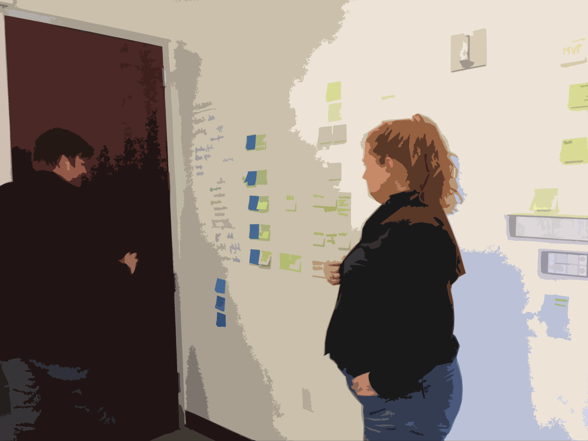
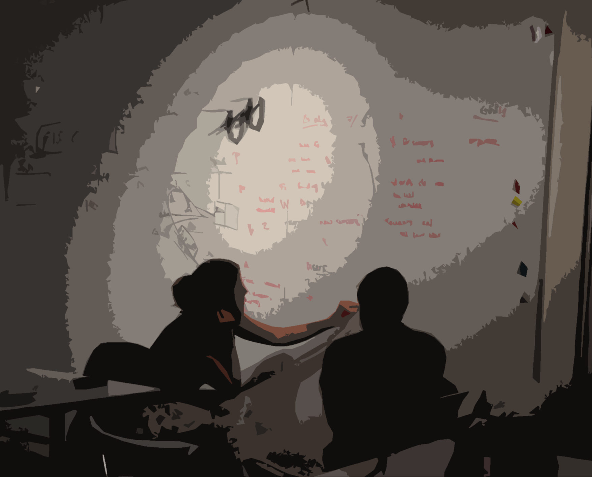
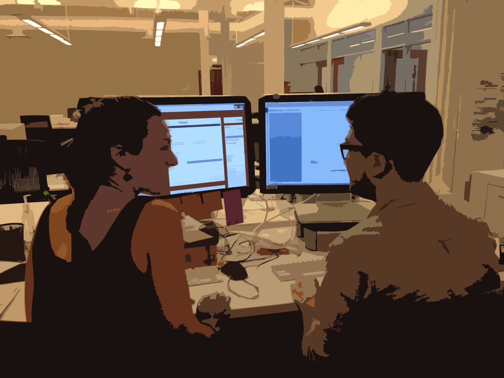
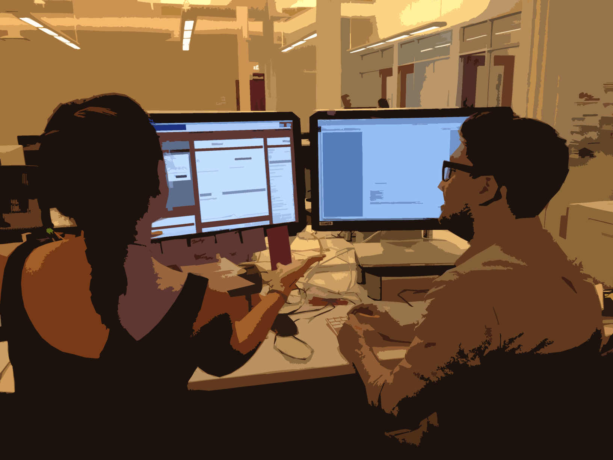
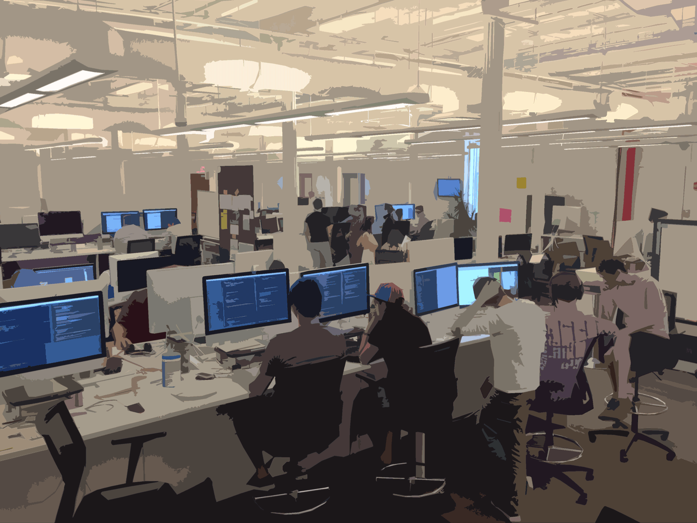
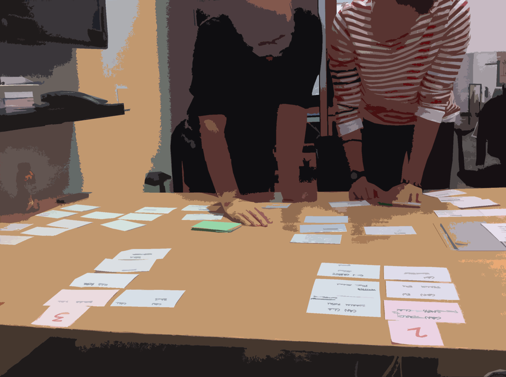
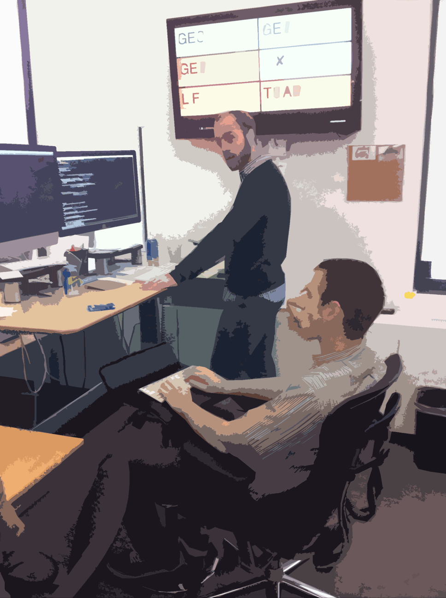
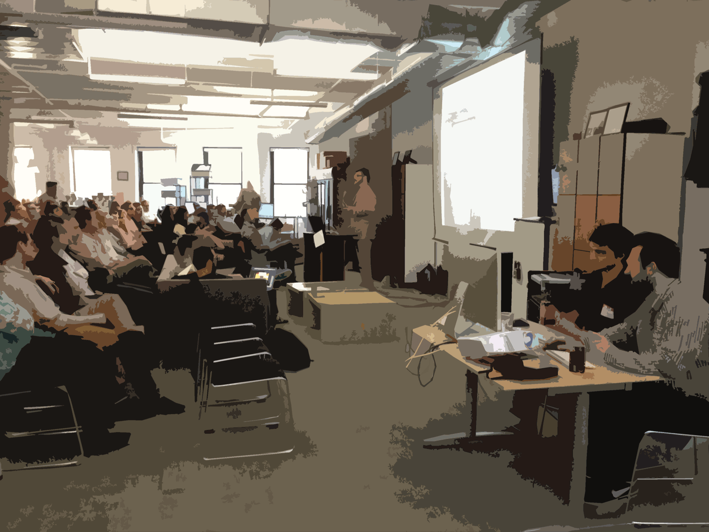
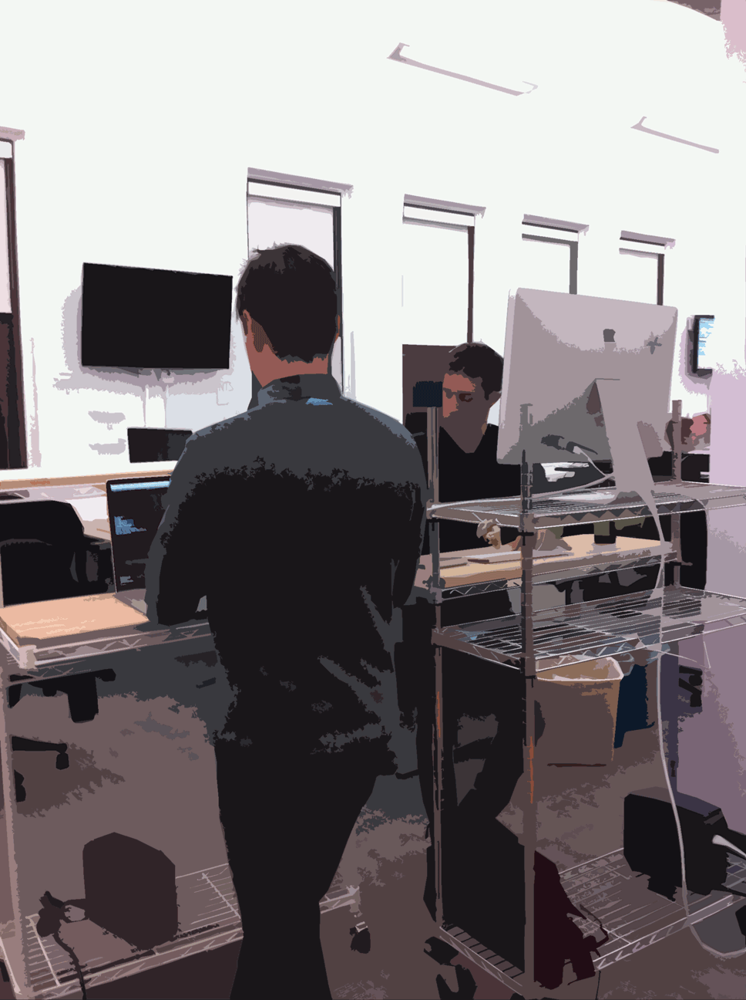
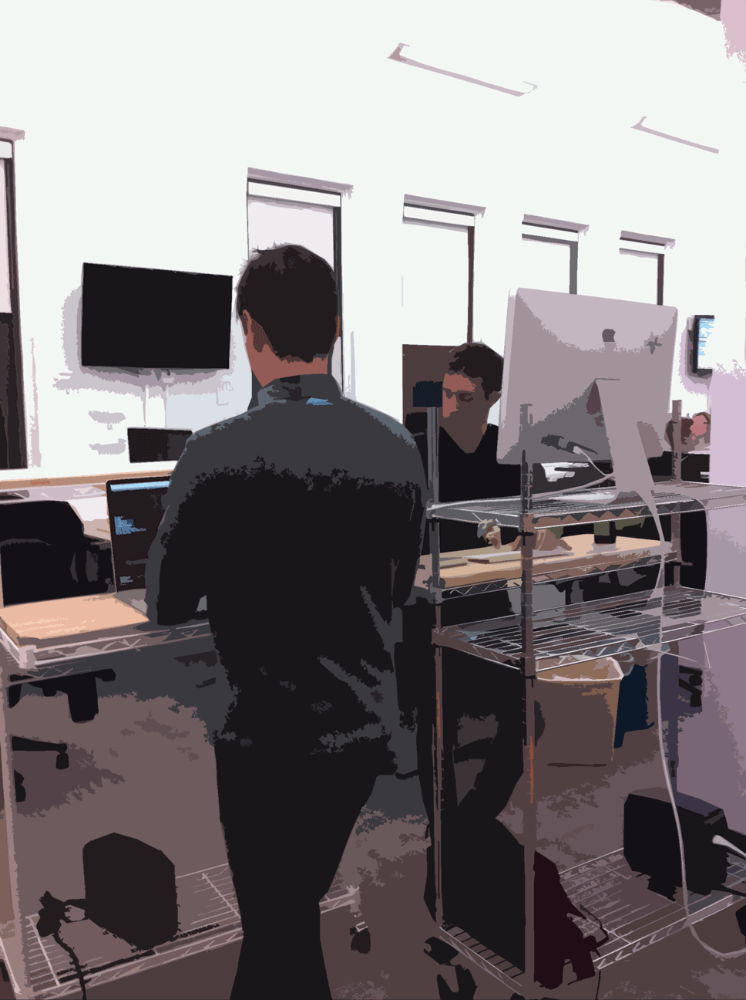

Hi :-)
Pair Design for Fun and Profit
Asbury Agile, 2014
Jonathan Berger, Pivotal Labs
Who Am I?
- @jonathanpberger
- ~30 agile projects since ~2008
- design, code, product
- interested in agile practice for design
How is design different for Agile?
- engineers build more quickly (and change it more rapidly)
- demands on design are very different than what most designers are accustomed to.
- execution is only part of the game; we do enablement too
How to make design for agile successful?
- focus on the right questions,
- keep pace with our engineers,
- build beautiful, functional product,
- enable clients to do the same.
Why Pair Design?
Better (Product) Design
- reduce the cost of change
- encourage convention, reduce trivial decisions
- reduces waste
Better Designers
- promotes learning
- knowledge-transfer
- continuous improvement
Better Teams
- It helps teams to start from a shared foundation,
- to make creative decisions collaboratively,
- to externalize and validate thinking,
Better Projects
- fresh eyes
- mesh complementary skill sets
- better Bus Count
- easier ramp-up
- facilitate rotation
Better Product
- to optimize for progress (not perfection)
- to remove individual ego
- promote shared ownership of product
How do we Pair design?
- many of the same techniques and philosophies as engineering
- design is different BUT
- core principles of communication and tight feedback loops remain.
- Pair design takes a few forms. The three major standbys are:
"Synth/Gen" Whiteboard pairing
- two people, one marker (cursor)
- "Generator" has marker in hand, tends to come up with ideas.
- "Synthesizer" stands back, asking questions, probing edge cases, keeping the big picture in context.
- map out feature sets or user-flows at about the epic level of granularity.

- two people, one marker (cursor)
- "Generator" has marker in hand, tends to come up with ideas.
- "Synthesizer" stands back, asking questions, probing edge cases, keeping the big picture in context.
- map out feature sets or user-flows at about the epic level of granularity.

- two people, one marker (cursor)
- "Generator" has marker in hand, tends to come up with ideas.
- "Synthesizer" stands back, asking questions, probing edge cases, keeping the big picture in context.
- map out feature sets or user-flows at about the epic level of granularity.
Medium-Fidelity Illustrator Pairing
- when whiteboard-fidelity is no longer sufficient to make design decisions,
- two visual designers building a visual design system,
- i.e. building a visual metaphor for the object domain that they're mapping onto the product.
- two mice plugged into one copy of illustrator, trade off control of the cursor
- designers discuss the design challenge, occasionally turning to the computer to test out a feeling, illustrate an idea, or enshrine a decision.




Stylesheet Pairing
- often called "cross-functional pairing"; that's a misnomer
- two designers in the text editor, in the browser, working on markup
- enshrine design decisions and implement them on the front end of the site


Cross-functional pairing
- there's an interesting difference w/ cross functional pairing.
- 2x designers pairing together == some skill transfer but similar perspective
- designer + developer == a lot more skill transfer,
Benefits of Cross-Functional pairing
- no need to reproduce the design in mock-ups (a time-consuming task),
- no time spent marking up (on the designers part) and decoding (on the developers part) redlines (both time-consuming tasks),
- developer learns the rationales behind the design decisions.
- designer & dev move from adversarial context to collaborative context: unit cohesion, better bus-count, better collective ownership of the product.
Troubleshooting techniques: Soloing
Converge / Diverge / Converge
- hit an impasse?
- diverge for a short time (usually 10-30 minutes) to work through ideas on their own
- re-converge, presenting their explorations, and continuing to work the design.
Exquisite Corpse
- surrealist literary parlor game
- short timer (usually 10-30m), work on a design direction, and then pass it off
- Alternately, designers can forego the timer and just say "ready?" when they're stuck.
- Ideally, several revolutions are completed each hour, allowing for rapid iteration, idea generation, and refinement.
Double-Speed Documentation
- Once made, design decisions often have to be documented.
- Design pairs will split up to create the Minimum Viable DRY documentation.
- Because there are two designers, they deliver in half the time.
When do we pair?
- Dev == 100% pairing, design <100%
- Pairing is valuable whenever design decisions are being made,
- documenting decisions made by the pair: divide and conquere (2x speed for the dull stuff!)
Switch-hit pairing
- two projects, two designers
- solo mostly, but have context
- support each other when decisions need to be made
- block out ~1hr / day
Questions?
Thanks!
http://jonathanpberger.com/talks
Say hi on twitter at @jonathanpberger
or jonathanpberger on github, gmail, forrst, etc...
Extras!!
Balanced Team & Pairing
- these are not existential claims
- It's not "I am a developer I was born that way" or trained that way,
- it is "my role on this project developer or designer".
Product people
- Product people tend to be on the more interdisciplnary side
- formally speaking on our projects their first obligation is to make sure the backlog is groomed and healthy
- and the rest of the team can have a healthy conversation around "what do we need to do next? What does that look like? How's it enshrined?"
Product Synth-Gen pairing
- When pairing with product designers via Synth-Gen,
- two people at the whiteboard trading off between high level generative ideas
- and a more strategic Step-Back, Higher- Level view of "How do these ideas comport with the rest of our system?"
- that's something that product for the most part can drop into any piece of.
Product Medium-Fidelity pairing
- Product tends to be pretty good feedback for some of the illustrator pairing that we'll do
- they may be less formally trained, they may have less of a sense of color theory,
- but generally being able to talk through user flows is something that we'll do then and those interactions can be aided by product.
Pics (or it didn't happen)






